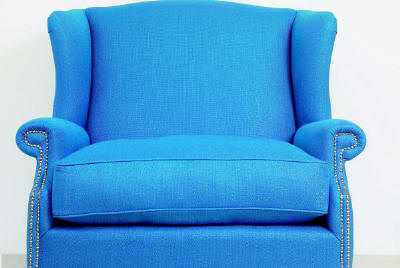
Meubelstoffering
Stoelen, fauteuils en banken opnieuw gestoffeerd, zodat ze weer als nieuw zijn en passen bij de rest van uw interieur.
Stof of leer
Form stoffeert stoelen, fauteuils en banken opnieuw in stof of leer. Van erfstuk en antiek tot design, vanuit ons atelier in Roosendaal.
Een mooie stof of leersoort, met biezen, sierkussens of bijpassende gordijnen, maakt uw interieur af.

Stoelen, fauteuils en banken opnieuw gestoffeerd, zodat ze weer als nieuw zijn en passen bij de rest van uw interieur.
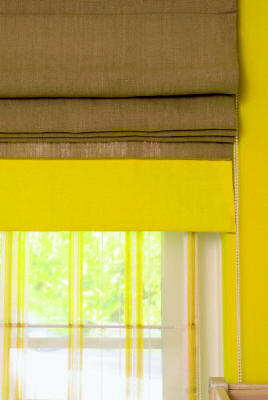
Overgordijnen, vitrage en vouwgordijnen op maat, in een stof die past bij uw meubels en uw kamer.
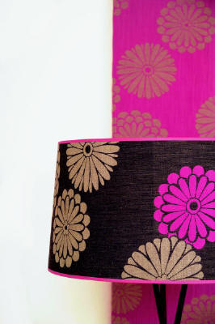
Een lampenkap die niemand anders heeft. Gemaakt naar uw wens, als u de juiste kap nergens kunt vinden.
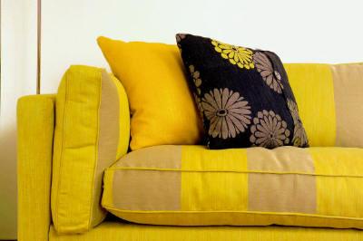
Design sierkussens voor net wat meer kleur in huis, en nieuwe kussens voor uw boot of caravan.
We kijken samen naar uw meubel en uw interieur, bij u thuis of in het atelier.
U kiest uit leer en stoffen in diverse merken, designs en kleuren. De offerte is gratis.
Uw meubel krijgt nieuwe stof of leer en al het zitcomfort terug. En u heeft het terug voordat u het mist.
Een greep uit de meubels die bij Form opnieuw zijn gestoffeerd, van antieke stoel tot moderne fauteuil.
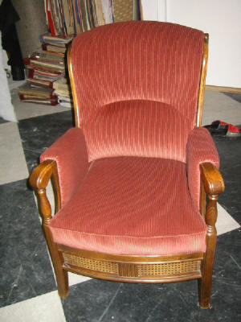
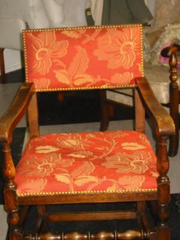
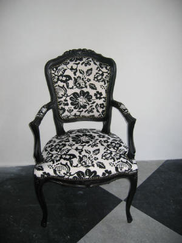
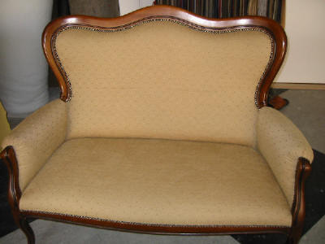
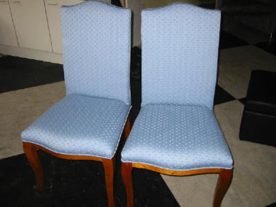
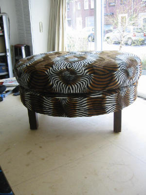
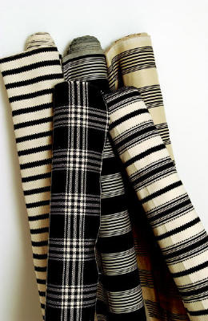
Form Meubelstoffering is het atelier van Mirjam Fasol aan de Monseigneur Frenckenstraat in Roosendaal. Al 25 jaar stofferen we meubels opnieuw en maken we gordijnen, sierkussens en lampenkappen op maat.
Mensen zijn gehecht aan hun meubels, zeker als het om een erfstuk, antiek of bijzonder design gaat. Dan is het de moeite waard om bij slijtage de stof of het leer te laten vernieuwen. U krijgt een nieuw meubelstuk terug, met al het zitcomfort.
Vertel kort om welk meubel het gaat. Een foto meesturen helpt bij de offerte.
Bel of mail ons, dan kijken we samen naar uw meubel, gordijnen of lampenkap. Advies kan bij u thuis of in het atelier.